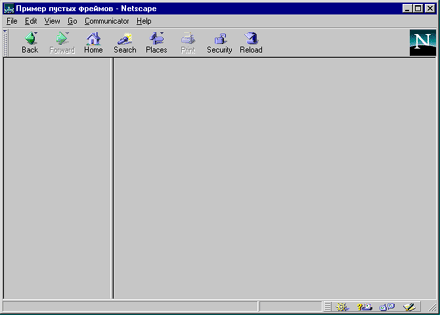
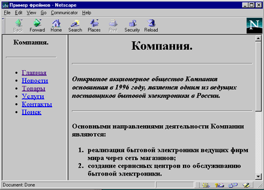

Что такое фрейм?
В каком-то смысле фрейм - это именно то, что означает данное слово: рамка вокруг картинки, окошко или страница. Вводя тэг <FRAME>, дизайнер НТМL-страницы разделяет экран броузера на части. В результате человек, просматривающий страницу, может изучать одну часть страницы независимо от остальной части. Фактически броузер, распознающий фреймы, загружает разные страницы в разные секции, или фреймы, экрана. Например, вы можете построить страницу таким образом, что фирменный знак будет зафиксирован в верхней части экрана, в то время как остальную часть страницы пользователь пролистывает обычным способом. Можно расположить сбоку кнопки навигации, которые не перемещаются, когда читатель щелкает их мышкой, так что изменяется только часть экрана, а сама полоска навигации остается неподвижной.
Хотя фиксация фирменного знака или средств навигации - наиболее очевидные способы использования фреймов, это не значит, что их возможности тем и исчерпываются. Просто перечисленные решения - первое, что приходит в голову дизайнерам, когда они думают о том, как использовать фреймы. Но каждый раз, когда в экран броузера вставляется фрейм, вы урезаете территорию, на которой можно было бы разместить данные. Чем больше вы вводите фреймов, тем меньше остается полезного пространства и тем скорее вы запутаете своих читателей, незнакомых с навигацией на Web-странице с фреймами.
Например, разумно хранить в фрейме логотип компании только на первых нескольких уровнях самых важных страниц, а основные данные показывать без фреймов.
На первый взгляд, фреймы - это нечто сложное, но их легче понять, если провести аналогию с ячейками таблицы. Расположение фреймов на экране задается почти так же, как ячеек в таблице: тэги и атрибуты работают так же, как их табличные родственники. Однако, хотя аналогия между единичным фреймом на странице и ячейкой таблицы полезна, нужно помнить, что есть и отличия. Содержимое ячейки задано в коде HTML-страницы с таблицей. Текст или графика, составляющие содержимое таблицы, фактически вводятся на той же самой странице HTML, что и тэг или атрибут, описывающие таблицу. Напротив, экран с фреймами описывается в НТМL-странице, называемой (frameset ). Содержимое же фрейма - это отдельная HTML-страница, которая может находиться где угодно - в другом каталоге, на локальном сервере или на удаленном узле где-то в сети. Фреймовая структура определяет только способ организации экрана с фреймами и указывает, где находится начальное содержимое каждого фрейма. Для всех фреймов задаются URL, описывающие местонахождение их данных. Как правило, на странице с фреймовой структурой нет содержимого фреймов. Такая страница обычно невелика - она описывает только кадровую структуру экрана. Когда документ загружается в фрейм, вы можете щелкать мышкой на ссылке в этом документе, что вызовет появление связанных документов в других кадрах, заданных в фреймовой структуре.
Создадим, для лучшего понимания, пару простых страничек с фреймами, чтобы стало понятно, каково строение НТМL страницы с фреймами и для чего нужны основные тэги и атрибуты.
Построим страницу с двумя фреймами. Зададим слева фрейм оглавления с заголовками статей, а справа поместим страницу с самими статьями. Сделаем так, что когда пользователь щелкает мышкой на ссылке в той части экрана, где находится оглавление, сама статья появляется в правом фрейме. Это основной, наиболее распространенный способ использования фреймов.
Для начала мы должны представить себе общий вид страницы - где и какого размера будут фреймы. Затем можно подумать об их содержании. Ниже приводится код простой фреймовой структуры с использованием тэга <FRAMESET>. Обратите внимание: страница с фреймовой структурой не содержит тэга <ВОDY>.
<HTML> <HEAD> <TITLE>Пример фреймов</TITLE> </HEAD> <FRAMESET COLS="25%, 75%" <FRAME SRC="a.html"> <FRAME SRC="b.html" NAME="main"> </FRAMESET> <NOFRAMES> Вы видите эту страницу браузером, не поддерживающим фреймы. </NOFRAMES> </HTML>

Рис. 1.23. Вид экрана броузера с фреймами
Щелкните здесь, чтобы просмотреть пример 1.22 в браузере
Вот и весь код, необходимый для задания фреймовой структуры. Обратите внимание на тэг <NOFRAMES>. Через несколько минут мы к нему вернемся. В результате мы получили экран, разделенный на два окна. Левое окно занимает 25 процентов экрана и содержит страницу с названием a.html. Окно справа займет 75 процентов и вначале покажет файл b.html. Пока у нас их нет, так что вы увидите страницу с двумя пустыми фреймами. Прежде чем она появится, нам придется пару раз щелкнуть мышкой в ответ на сообщения об ошибках, потому что броузер будет пытаться найти несуществующие страницы. Заметьте, что правую страницу мы назвали <main > ( <главная>) с помощью строки:
<FRAME SRC="b.html" NAMЕ="main">
Это означает, что фрейм под именем main будет содержать страницу b.html. Заметим, что поскольку мы не собираемся показывать в левом фрейме никаких страниц, кроме menu.html, нам не нужно его называть.
Теперь давайте загрузим фреймы с содержимым. Зададим страницу menu.html в левом фрейме, где мы собираемся щелкать мышью, переключаясь между двумя страницами в правом фрейме. Файл menu.html - это обычная НТМL-страница, построенная как оглавление. На самом деле мы можем взять готовую страницу с оглавлением и использовать ее. Имейте в виду, что этот фрейм узкий и высокий, так что страница, которая будет в него загружаться, должна быть соответствующим образом спроектирована. Теперь мы должны определить, где будут появляться другие страницы при щелчке мышкой на ссылке. Поскольку мы хотим, чтобы они отображались в правом фрейме, добавим атрибут ТАRGET= (TARGЕТ="main") в тэг ссылки. Это означает, что когда пользователь щелкает на ссылке, вызываемая страница появляется в фрейме main. Мы отображаем все страницы в фрейме main, поэтому давайте добавим атрибут ТАRGЕТ="main" во все тэги ссылок в оглавлении. Если мы не определим атрибут ТАRGЕТ, то страница появится там, где мы щелкнули мышкой, - в левом фрейме, что нас не устраивает, хотя в какой-нибудь другой ситуации подобное поведение было бы очень кстати. Например, вы можете добавить ссылку <Другие пункты оглавления>, которая будет просто выводить следующие ссылки. Имеет смысл сделать оглавление подлиннее, чтобы читатели видели как можно больше ссылок. Но сейчас давайте ограничимся простым примером. Ниже приведен код для левого фрейма menu.html.
<HTML> <HEAD> <TITLE> Меню</TITLE> </HEAD> <BODY> <H3 ALIGN=CENTER>Компания.</H3> <HR> <UL><font color="#400040" size="4"> <LI><a href="html-pr2-3.html" ТАRGЕТ="main">Главная</a> <LI><a href="news.shtml" ТАRGЕТ="main">Новости</a> <LI><a href="products.shtml" ТАRGЕТ="main">Товары</a> <LI><a href="servis.shtml" ТАRGЕТ="main">Услуги</a> <LI><a href="contact.shtml" ТАRGЕТ="main">Контакты</a> <LI><a href="search.shtml" ТАRGЕТ="main">Поиск</a> </UL> </font> </BODY> </HTML>
Рис. 1.24. Оглавление (меню) располагающееся в левой части
Щелкните здесь, чтобы просмотреть пример 1.23 в браузере
Заметим, что здесь ничего не говорится о фреймах. О них все сказано в фреймовой структуре. Единственное, о чем нужно позаботиться на каждой НТМL странице, появляющейся в фрейме, так это о том, где поместить ссылки, активирующие те или иные действия. В нашем примере, в левом фрейме, где находится оглавление, будет располагаться только одна страница. Мы хотим, чтобы при щелчке мышкой в левой странице ссылочный документ появлялся бы в правом фрейме main.
Правый фрейм main будет содержать сами HTML-страницы. Ваша задача так их спроектировать, чтобы они хорошо смотрелись в меньшем, чем обычно, окне, потому что часть экрана будет занята левым кадром оглавления. Но больше эти страницы ничем не примечательны. Ниже приводится код для страницы, упомянутой первой в оглавлении ( html-pr2-3.html).
<HTML> <HEAD> <TITLE> Главная страница</TITLE> </HEAD> <BODY> <H1 ALIGN=CENTER>Компания.</H1> <HR> <H3 ALIGN=LEFT><I>Открытое акционерное общество Компания, основанная в 1996 году, является одним из ведущих поставщиков бытовой электроники в России.</I></H3> <HR> <H3>Основными направлениями деятельности Компании являются: <OL> <LI>реализация бытовой электроники ведущих фирм мира через сеть магазинов; <LI>создание сервисных центров по обслуживанию бытовой электроники.</H3> </OL> <HR> <H3><U><FONT COLOR=RED> Компания ищет агентов по сбыту бытовой электроники.</FONT></U></H3> <H5 ALIGN=CENTER>Контактная информация</H5> <UL> <LI>Telephone (123) 12-34-56 <LI>FAX (123) 12-34-56 <LI>Почтовый адрес 123456 г. Город, ул Лесная, 106 <UL TIPE=CIRCLE>Электронная почта<BR> <LI>Общая информация: abc@abc.su <LI>Продажи: abc@abc.abc.su </UL> </UL> <BR><BLINK>Copyright</BLINK> © 1997 Компания </BODY> </HTML>
Рис. 1.25. Вид правой части экрана с фреймами
Щелкните здесь, чтобы просмотреть пример 1.24 в браузере
Обратите внимание: на приведенных страницах нигде тайно не запрограммирован фрейм. Это значит, что можно без особых проблем конвертировать все документы вашего Web-сервера для использования в фреймовой структуре.
У многих ваших посетителей еще остались броузеры, не умеющие обращаться с фреймами. По этим причинам разумно предоставить доступ к версии ваших основных страниц без фреймов. Если читатель с устаревшим броузером окажется на вашей странице с фреймовой структурой, все, что находится на ней между тэгами < NOFRAMES > и </ NOFRAMES >, будет выглядеть отлично - броузер просто проигнорирует фреймы. Вот почему обязательно нужно использовать тэги <ВODY></ВОDY>. Возможно, вам придется иначе организовать экран без фреймов.
Можно поместить на страницу с фреймами кнопку No Frames (Без фреймов). Ее назначение очевидно. Такой вариант достаточно разумен и легко осуществим.
На тот случай, если вы неуверенно чувствуете себя при использовании < NOFRAMES >, ниже приведен пример страницы с фреймовой структурой с добавленным в конце разделом < NOFRAMES >.
<HTML> <HEAD> <TITLE> Пример фрейма</TITLE> </HEAD> <FRAMESET COLS="25%, 75%" <FRAME SRC="html-pr5-2.html"> <FRAME SRC="html-pr2-3.html" NAME="main"> </FRAMESET> <NOFRAMES> Вы видите эту страницу броузером не поддерживающим фреймы. Броузер поддерживающий фреймы не видит этот текст. </NOFRAMES> </HTML>

Рис. 1.26. Вид экрана с фреймами
Щелкните здесь, чтобы просмотреть пример 1.25 в браузере
Имейте в виду, что поддерживающий фреймы броузер проигнорирует все, что находится между тэгами < NOFRAMES > и </ NOFRAMES >. И наоборот, не поддерживающий фреймы броузер проигнорирует все, что находится между тегами <FRAMESET> и </FRAMESET>. Код без фреймов можно поместить и в начало, и в конец страницы.
Изучив тэги и атрибуты для работы с фреймами, давайте поговорим о том, как лучше всего проектировать страницы с фреймовой структурой.
Тэги <FRAMESET> обрамляют текст, описывающий компоновку фреймов. Здесь размещается информация о числе фреймов, их размерах и ориентации (горизонтальной или вертикальной). У тэга <FRAMESET> только два возможных атрибута: ROWS=, задающий число строк, и СОLS=, задающий число столбцов. Между тэгами <FRAMESET> не требуется указания тэга <ВОDY>, но его можно поместить между тэгами <NOFRAME> в конце фреймовой структуры. Между тэгами <FRAMESET> не должно быть никаких тегов или атрибутов, которые обычно используются между тэгами <ВОDY>. Единственными тэгами, которые могут находиться между тэгами <FRAMESET> и </FRAMESET>, являются тэги <FRAME>, <FRAMESET> и < NOFRAME>. Это упрощает задачу. В основном все связано с тэгами <FRАМЕ> и их атрибутами. Если же вы хотите поэкспериментировать, можно сделать вложенные друг в друга тэги <FRAMESET> аналогично тэгам <ТАВLЕ>.
Атрибуты ROWS= и СОLS= похожи. Имейте в виду, что для каждой строки и столбца, упомянутых в тэге <FRAMESET>, должен быть свой набор тэгов <FRАМЕ>.
Атрибут ROWS= тэга < FRAMESET > задает число и размер строк на странице. Количество тэгов <FRАМЕ> должно соответствовать указанному числу строк. Справа от знака = можно определить размер каждой строки в пикселях, процентах от высоты экрана или в относительных величинах (обычно это указание занять оставшуюся часть места). Не забывайте пользоваться кавычками и запятыми и оставлять пробелы между значениями атрибутов. Например, следующая запись формирует экран, состоящий из трех строк: высота верхней равна 20 пикселей, средней - 80 пикселей, нижней - 20 пикселей:
Следующий тэг < FRAMESET > создает экран, на котором верхняя строка занимает 10% высоты экрана, средняя - 60%, а нижняя - оставшиеся 30%.
<FRAMESET ROWS="10%, 60%, 30%->
Можно поступить элегантнее, задав относительные значения в комбинации с фиксированными, выраженными в процентах или пикселях. Например, следующий тэг создает экран, на котором верхняя строка имеет высоту 20 пикселей, средняя - 80 пикселей, а нижняя занимает все оставшееся место:
< FRAMESET ROWS="20, 80, *" >
А можно сделать так:
< FRAMESET ROWS="20, 2*, *" >
Число перед знаком ' показывает, что соответствующая строка (в данном случае - средняя) занимает в два раза больше оставшегося на экране места, чем нижняя. Не забывайте, что значения относительны (они зависят от размера экрана). Это часто бывает удобно, ведь вы не всегда знаете, какой у вашего пользователя монитор и какое разрешение он использует.
Столбцы задаются так же, как строки. Для них применимы те же атрибуты.
Тэг <FRАМЕ> определяет внешний вид и поведение фрейма. Этот тэг не имеет закрывающего тэга, поскольку в нем ничего не содержится. Вся суть тэга <FRАМЕ> в его атрибутах. Их шесть: NАМЕ=, MARGINWITH=, MARGINHEIGHT=, SCROLLING=, NORESIZE= и SRC=.
Если вы хотите, чтобы при щелчке мыши на ссылке соответствующая страница отображалась в определенном фрейме, вы должны указать этот фрейм, чтобы страница знала, куда что загружать. В предыдущих примерах мы назвали большой правый фрейм main, и именно в нем появлялись страницы, выбранные из оглавления в левом фрейме. Фрейм, в котором отображаются страницы, называется целевым (target). Фреймы, которые не являются целевыми, именовать не обязательно. Например, можно записать такую строку:
<FRАМЕ SRC="my.html" NАМЕ="main">
Имена целевых фреймов должны начинаться с буквы или цифры. Выбирайте названия попроще, чтобы не запутаться. Одни и те же имена разрешается использовать в нескольких фреймовых структурах. По щелчку мыши соответствующие страницы будут отображаться в именованном фрейме:
Атрибут МАRGINWITH = действует аналогично атрибуту таблиц CELLPADDING=. Он задает горизонтальный отступ между содержимым кадра и его границами. Наименьшее значение этого атрибута равно 1. Нельзя указать 0. Можно ничего не присваивать - по умолчанию атрибут равен б.
Атрибут МАRGINHEIGHT= действует так же, как и МАRGINWITH =. Он задает поля в верхней и нижней части фрейма.
Хотите ли вы, чтобы ваши читатели пользовались прокруткой в фрейме? Иногда бывает разумно лишить их этого удовольствия. Возможные варианты: SCROLLING =YES, SCROLLING =NО, SCROLLING =АUТО. SCROLLING =YES означает, что в фрейме всегда будут полосы прокрутки, даже если это не нужно. При задании SCROLLING =NО полос прокрутки не будет, даже если они необходимы. Если документ слишком большой, а вы задали режим без прокрутки, то документ просто будет обрезан. Атрибут SCROLLING =АUТО предоставляет броузеру самому решать, требуются ли полосы прокрутки или нет. Если атрибут SCROLLING= отсутствует, результат будет таким же, как и при задании SCROLLING =АUТО.
Как правило, пользователь может, перемещая границу фрейма мышкой, изменить его размер. Это удобно, но не всегда. Иногда вам потребуется атрибут NORESIZE. Помните: все границы фрейма, для которого вы задали NORESIZE, становятся неподвижными - соответственно может оказаться так, что размеры соседних фреймов тоже станут фиксированными. Пользуйтесь этим атрибутом с осторожностью.
Атрибут SRС= применяется в тэге FRАМЕ при разработке фреймовой структуры для того, чтобы определить, какая страница появится в том или ином кадре. Если вы зададите атрибут SRС= не для всех фреймов, у вас возникнут проблемы. Даже если страницы, отображаемые в фрейме, выбираются в соседнем фрейме, вы должны по крайней мере задать для каждого фрейма начальную страницу. Если вы не укажите начальную страницу и URL, фрейм окажется пустым, а результаты могут быть самыми неожиданными - например, ваш броузер начнет выводить все новые и новые окна просмотра.
Чтобы разобраться с атрибутом ТАRGЕТ=, давайте вернемся к нашему простому примеру с кадром оглавления. Когда пользователь щелкает мышкой на одной из ссылок в левом фрейме, соответствующая страница должна появиться в правом фрейме, а оглавление остается неизменным. Чтобы этого добиться, нужно определить целевой фрейм ТАRGЕТ, в котором будет отображаться страница для каждого пункта оглавления. Задание целевых фреймов осуществляется в ссылках левого фрейма. Вот зачем всем кадрам в фреймовой структуре были присвоены имена. Правый фрейм называется main, так что нужно в каждой ссылке добавить атрибут ТАRGЕТ="main", в результате чего соответствующая страница появится в фрейме main. Обратите внимание: каждая ссылка содержит атрибут ТАRGЕТ="main", который в ответ на щелчок мышью отображает страницу в фрейме main.
Атрибут ТАRGЕТ= можно задавать для нескольких различных тэгов. При использовании в тэге <ВАSЕ> он направляет все ссылки в определенный целевой фрейм, если в дальнейшем особо не оговорено другое. Можно задать атрибут ТАRGЕТ= в тэге <АRЕА> в активном изображении или в тэге <FОRМ>. Фреймы полезны для организации форм. Пользователи будут видеть одновременно и форму, и результат своего выбора. Обычно при щелчке мышью кнопки Submit форма исчезает и возникает страница с результатами выбора. Сочетание форм и фреймов может оказаться удобным средством навигации.
<Волшебные> целевые фреймы предназначены исключительно для особых случаев. Прежде чем вы решитесь их применить, дважды подумайте: они способны усложнить жизнь некоторым пользователям.
Имена <волшебных> целевых фреймов всегда начинаются с символа подчеркивания (_); никакие другие фреймы не могут так называться. < Волшебные> фреймы необязательно указывать в фреймовой структуре. Если не проявить должной аккуратности, то это - еще один повод вашему броузеру открыть кучу окон.
Если атрибут ТАRGЕТ= ссылается на " blank", то документ всегда будет появляться в новом пустом окне.
Имя "self" указывает на то, что выбранная страница загружается в тот же фрейм, где была активирована ссылка. Если вы щелкнете мышкой на ссылке в фрейме оглавления, выбранная страница окажется в том же самом фрейме. Если вы задали фрейм для всего документа в атрибуте ВАSЕ=, то "self" помогает нейтрализовать ссылку в ВАSЕ=.
Пользоваться этим именем небезопасно. Документы, вызываемые по ссылке на "раrent", появляются в родительской фреймовой структуре. Это хороший способ окончательно сбить с толку читателей. Да и у вас могут возникнуть трудности в процессе форматирования страниц. Соблюдайте осторожность.
При указании ссылки "tор" документы появляются в отдельном окне вне фрейма. Независимо от вашего желания броузер откроет новое окно просмотра.
Вложенные фреймы не очень способствуют навигации. И все же бывают случаи, когда возникает потребность сделать фреймы внутри других фреймов. По мнению автора, фреймы сами по себе - достаточно странное средство навигации, и незачем еще более усложнять свои страницы. Но если вам все же нужны вложенные фреймы, то они не представляют проблем.
В основном вложенные фреймы действуют так же, как вложенные таблицы. Задайте кадровую структуру, а внутри какого-нибудь фрейма в ней еще одну структуру. Помните, что тэг <FRАМЕ> не имеет закрывающего тэга. Вы, наверное, заметили, что при работе с фреймами не используются тэги <СОLSРАN> и <ROWSРАN>. Их роль играют множественные, или вложенные, фреймы. Задав внутри одной объемлющей фреймовой структуры две независимых подструктуры, можно поместить в левой части экрана столбец из двух, а в правой - из трех фреймов.
Назад | Содержание | Вперед